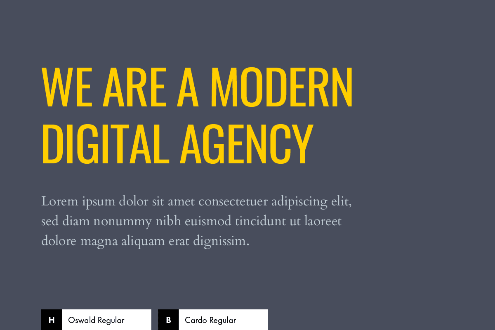

Oswald and Cardo Regular
TYPOGRAPHY
Oswald and Cardo Regular fonts as a high contrast combination that will impact your site’s visitors for sure. That’s Oswald + Cardo. A condensed sans-serif in all caps for the headings and a classically styled serif for the body. The combination of these two fonts brings attention to the main headings, while allowing the reader to easily focus and interprite text within the body of the website.